MatrixPotential1S¶
About the MatrixPotential1S class¶
The WaveBlocks Project
@author: R. Bourquin @copyright: Copyright (C) 2010, 2011, 2012, 2013, 2014 R. Bourquin @license: Modified BSD License
Inheritance diagram¶
Class documentation¶
- class WaveBlocksND.MatrixPotential1S(expression, variables, **kwargs)¶
This class represents a scalar potential
 . The potential is
given as an analytic matrix expression. Some symbolic
calculations with the potential are supported.
. The potential is
given as an analytic matrix expression. Some symbolic
calculations with the potential are supported.- calculate_eigenvalues()¶
Calculate the eigenvalue
 of the potential .
In the scalar case this is just equal to the matrix entry .
Note: This function is idempotent and the eigenvalues are memoized for later reuse.
of the potential .
In the scalar case this is just equal to the matrix entry .
Note: This function is idempotent and the eigenvalues are memoized for later reuse.
- calculate_eigenvectors()¶
Calculate the eigenvector
 of the potential .
In the scalar case this is just the value .
Note: This function is idempotent and the eigenvectors are memoized for later reuse.
of the potential .
In the scalar case this is just the value .
Note: This function is idempotent and the eigenvectors are memoized for later reuse.
- calculate_exponential(factor=1)¶
Calculate the matrix exponential
 . In the
case of this class the matrix is of size thus
the exponential simplifies to the scalar exponential function.
Note: This function is idempotent.
. In the
case of this class the matrix is of size thus
the exponential simplifies to the scalar exponential function.
Note: This function is idempotent.Parameters: factor – The prefactor  in the exponential.
in the exponential.
- calculate_hessian()¶
Calculate the Hessian matrix of the potential
with  . For potentials which depend only one variable,
this equals the second derivative and 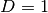. Note that this function is idempotent.
. For potentials which depend only one variable,
this equals the second derivative and 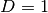. Note that this function is idempotent.
- calculate_jacobian()¶
Calculate the Jacobian matrix of the potential
with . For potentials which depend only one variable,
this equals the first derivative and . Note that this function is idempotent.
- calculate_local_quadratic(diagonal_component=None)¶
Calculate the local quadratic approximation 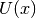 of the potential’s eigenvalue . Note that this function is idempotent.
Parameters: diagonal_component – Dummy parameter that has no effect here.
- calculate_local_remainder(diagonal_component=None)¶
Calculate the non-quadratic remainder
 of the quadratic
Taylor approximation of the potential’s eigenvalue .
Note that this function is idempotent.
of the quadratic
Taylor approximation of the potential’s eigenvalue .
Note that this function is idempotent.Parameters: diagonal_component – Dummy parameter that has no effect here.
- evaluate_at(grid, entry=None, as_matrix=False)¶
Evaluate the potential
elementwise on a grid  .
.Parameters: - grid (A Grid instance. (Numpy arrays are not directly supported yet.)) – The grid containing the nodes
 we want
to evaluate the potential at.
we want
to evaluate the potential at. - entry (A python tuple of two integers.) – The indices
 of the component 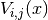
we want to evaluate or None to evaluate all entries.
This has no effect here as we only have a single entry .
of the component 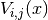
we want to evaluate or None to evaluate all entries.
This has no effect here as we only have a single entry . - as_matrix – Dummy parameter which has no effect here.
Returns: A list containing a single numpy ndarray of shape
 .
.- grid (A Grid instance. (Numpy arrays are not directly supported yet.)) – The grid containing the nodes
- evaluate_eigenvalues_at(grid, entry=None, as_matrix=False)¶
Evaluate the eigenvalue
elementwise on a grid .Parameters: - grid (A Grid instance. (Numpy arrays are not directly supported yet.)) – The grid containing the nodes we want
to evaluate the eigenvalue at.
- entry (A python tuple of two integers.) – The indices of the component 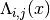
we want to evaluate or None to evaluate all entries. If
 then we evaluate the eigenvalue
then we evaluate the eigenvalue  . This has no
effect here as we only have a single entry .
. This has no
effect here as we only have a single entry . - as_matrix – Dummy parameter which has no effect here.
Returns: A list containing a single numpy ndarray of shape .
- grid (A Grid instance. (Numpy arrays are not directly supported yet.)) – The grid containing the nodes
- evaluate_eigenvectors_at(grid, entry=None)¶
Evaluate the eigenvector
elementwise on a grid .Parameters: - grid (A Grid instance. (Numpy arrays are not directly supported yet.)) – The grid containing the nodes we want
to evaluate the eigenvector at.
- entry (A singly python integer.) – The index
 of the eigenvector 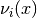
we want to evaluate or None to evaluate all eigenvectors.
This has no effect here as we only have a single entry .
of the eigenvector 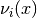
we want to evaluate or None to evaluate all eigenvectors.
This has no effect here as we only have a single entry .
Returns: A list containing the numpy ndarrays, all of shape
 .
.- grid (A Grid instance. (Numpy arrays are not directly supported yet.)) – The grid containing the nodes
- evaluate_exponential_at(grid, entry=None)¶
Evaluate the exponential of the potential matrix
on a grid .Parameters: grid (A Grid instance. (Numpy arrays are not directly supported yet.)) – The grid containing the nodes we want
to evaluate the exponential at.Returns: The numerical approximation of the matrix exponential at the given grid nodes.
- evaluate_hessian_at(grid, component=None)¶
Evaluate the potential’s Hessian at some grid nodes
.Parameters: - grid – The grid nodes the Hessian gets evaluated at.
- component – Dummy parameter that has no effect here.
Returns: The value of the potential’s Hessian at the given nodes. The result is an ndarray of shape
 is we evaluate at a single
grid node or of shape if we evaluate at multiple
nodes simultaneously.
is we evaluate at a single
grid node or of shape if we evaluate at multiple
nodes simultaneously.- grid – The grid nodes
- evaluate_jacobian_at(grid, component=None)¶
Evaluate the potential’s Jacobian at some grid nodes
.Parameters: - grid – The grid nodes the Jacobian gets evaluated at.
- component – Dummy parameter that has no effect here.
Returns: The value of the potential’s Jacobian at the given nodes. The result is an ndarray of shape
 is we evaluate at a single
grid node or of shape
is we evaluate at a single
grid node or of shape  if we evaluate at multiple nodes simultaneously.
if we evaluate at multiple nodes simultaneously.- grid – The grid nodes
- evaluate_local_quadratic_at(grid, diagonal_component=None)¶
Numerically evaluate the local quadratic approximation of the potential’s eigenvalue at the given grid nodes
.
This function is used for the homogeneous case.Parameters: - grid – The grid nodes the quadratic approximation gets evaluated at.
- diagonal_component – Dummy parameter that has no effect here.
Returns: A list containing the values 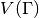, and .
- grid – The grid nodes
- evaluate_local_remainder_at(grid, position, diagonal_component=None, entry=None)¶
Numerically evaluate the non-quadratic remainder
 of the quadratic
approximation of the potential’s eigenvalue at the
given nodes .
of the quadratic
approximation of the potential’s eigenvalue at the
given nodes .Parameters: - grid – The grid nodes the remainder 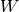 gets evaluated at.
- position – The point 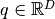 where the Taylor series is computed.
- diagonal_component – Dummy parameter that has no effect here.
- entry – Dummy parameter that has no effect here.
Returns: A list with a single entry consisting of an ndarray containing the values of . The array is of shape
.- grid – The grid nodes
- get_dimension()¶
Return the dimension
 of the potential .
The dimension is equal to the number of free variables
of the potential .
The dimension is equal to the number of free variables  where
where  .
.
- get_number_components()¶
Return the number
 of components the potential
supports. This is equivalent to the number of energy levels .
of components the potential
supports. This is equivalent to the number of energy levels .